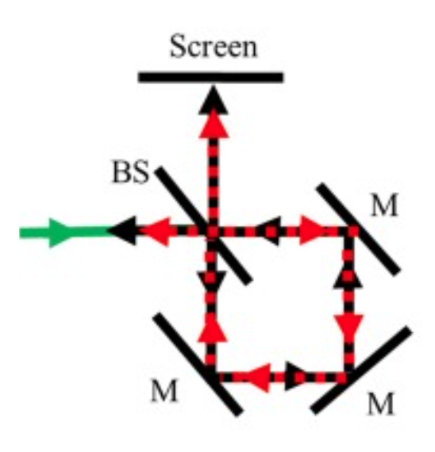
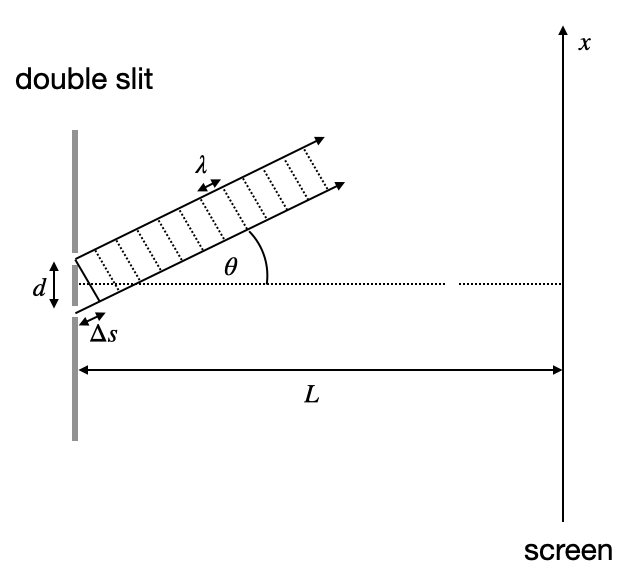

This page was generated from `/home/lectures/exp3/source/notebooks/L8/Interference.ipynb`_.

Coherence¶
One of the important properties e have assumed in the calculation of interference during the last lecture has been coherence. Coherence denotes the phase relation between two waves.
|
|---|
Fig.: Two waves of different frequency over time. |

The above image shows the timetrace of the amplitude of two wave with slightly different frequency. Due to the frequency, the waves run out of phase and have acquired a phase different of \(\pi\) after \(40\) fs.
The temporal coherence of two waves is now defined by the time it takes for the two waves to obtain a phase difference of \(2\pi\). The phase difference between two wave of frequency \(\nu_1\) and \(\nu_2\) is given by
Here \(t_0\) refers to the time, when thw two waves were perfectly in sync. Lets assume that the two frequencies are seperarated from a central frequency \(\nu_0\) such that
Inserting this into the first equation yields
with \(\Delta t=t-t_0\). We can now define the coherence time as the time interval over which the phase shift \(\Delta \phi\) grows to \(2\pi\), i.e. \(\Delta \phi=2\pi\). The coherence time is thus
Thus the temporal coherence and the frequency distribution of the light are intrisincly connected. Monochromatic light has \(\Delta nu=0\) and thus the coherence time is infinitely long. Light with a wide spectrum (white light for example) therefore has and extremly short coherence time.
The coherence time is also connected to a coherence length. The coherence length \(L_c\) is given by the distance light travels within the coherence time \(\tau_c\), i.e.
Coherence
Two waves are called coherent, if they exihibit a fixed phase relation over time. A constant phase relation allows the observation of interference effects.
The coherence time \(\tau_c\) is given by
The coherence length \(L_c\) is given by
Interferometers¶
Interferometers are measurement devices that slit a light wave into two waves, put them on different path to reunite them later. Due to the short wavelength in the optical range, interference is an extremely senstive tool to measures small differences in the optical path length. This is used in a number of application culminating in the detection of gravitational waves on large length scales and single molecules on the other extreme. The examples below all use the interference of two partial waves.
Michelson Interferometer¶
The Michelson interferometer is probably the most famous one due to the experiments by Michelson on the existance of th ether (a medium in which light was supposed to propagate) and nowadays also by the LIGO experiments for the detection of gravitational waves.The Michelson interferometer splits in incoming light wave with a beamsplitter (BS) into two equally intense waves that are directed towards two mirrors (M).
|
|---|
Fig.: Michelson interferometer. |

The light is reflected by the mirrors and joined again at the beamsplitter to propagate towards the screen. If the incident wave is a perfewct plane wave and the interferometer is aligned perfectly with both arms having the same length, you will observe a bright screen, which, when one are is elongated by half a wavelength is turin dark to show destructive interference. Yet, this perfect alignment does not exist neither a perfect plane wave. Therefore the pattern observed at the screen is either a stripe or ring pattern. Note that if the screen would be completely dark due to desctructive interference, all light would be reflected back towards the laser.
Mach-Zehnder Interferometer¶
Another important interferometer is the Mach Zehnder interferometer, which is sketched below. There two beamsplitters separate and unite the beams which finally end on two screens. The screens do both display interference patterns, which are complementary, meaning that the regions where the screens are bright on one side are dark on the other screen. This type of interfereometer is often used in integrated circuits and quantum information technology.
|
|---|
Fig.: Mach Zehnder interferometer. |


Fig.: Mach Zehnder interferometer used in the lecture. The left image shows the general layout (compare with sketch). The middle image shows the interference pattern obtained. Note that the two interference patterns are complementary. The pattern is circular as the incident wave is not a plane wave, but a Gaussian beam. The right image show a vortex like pattern, if a special waveplate is inserted that gives a special phase delay.
Sagnac Interferometer¶
The Sagnac interferometer is a special type of interferometer which uses a clockwise and counter-clockwise propagating beam in a system as shown below.
 |
|---|
Fig.: Sagnac interferometer. |
The two counter propagating rotation directions of light propagation allow us to rotate at the frequency \(\Omega\) the interferometer around an axis perpendicular on the interferometer plane. In this case both light waves travel different distance.
The distance is either longer or shorter by
if we consider a short time intervall \(dt\) and a circular interferometer with a radius \(r\). The time interval is given by \(dt=dl/c\). To obtain the path length we have to intergrate over one round
where \(A\) corresponds to the area encircled by the light path on a radius \(r\).
The final phase shift of the two wave propagating in the different direction is then
If the axis of rotation has now the angle \(\theta\) with the normal to the plane \(A\), the phase shift becomes
Thus the Sagnac interferometer can be used as a gyroscope. This is actually its main application, for example in military airplanes.
Double Slit Interference¶
The double slit is also an example for a two-wave interference. We consider two tiny slits in a screen, which lets two waves pass. The two waves are of course coherent and in phase right at the slit. The transmitted waves can travel in all directions. The two arrows in the sketch below, demnote two propagation directions and the correponding wavefronts. The two arrows thus represent two wavevectors. The overall situation is actually a bit more complicated and we will address this with the help of spherical waves later in the section about Huygens waves.
 |
|---|
Fig.: Double Slit . |
When you consider the image, you recognize that the light from the lower slit has to travel a distance \(\Delta s\) farther as compared to the wave from the upper slit. This path length difference is given by
where \(d\) is the distance between the two slits and \(\theta\) the angle the two directions make with the horizontal direction.
We can now decide under which conditions we observe constructure or destructive interference.
constructive interference
For constructive interference the waves have to have a path length difference, which is an integer multiple \(m\) of the wavelength.
destructive interference
For destructive interference the wave have a pathlength difference of an odd multiple of half the wavelength as given above.
Having the angles for the constructive and destructive interference on the screen, we would also like to have the intensity distribution, which we can calculate from two spherical waves
The total amplitude of the two waves is given by
For simplicity we have given thw two waves the same amplitude \(A\). Also the distance dependence of the amplitude of a spherical wave is put into the amplitude so that we don’t have to write it explicity every time.
The intensity is then the magnitude square if the total amplitude
Given that we know the pathlength difference \(\Delta s\) we can also express the intensity as a function of the angle \(\theta\) at which we observe the interference on the screen.
The two graphs below show the intensity as a function of \(\sin(\theta)\), for two different doubles slits at different distance.

Fig.: Double slit interference pattern for two different wavelength (532 nm, 700 nm) and two different slit separations (left: 3 µm, right: 5 µm)
The larger the slit separation \(d\), the closer are the neighboring peaks for a single color. Also if we shorten the wavelength \(\lambda\), the individual peaks of constructive interference come closer.